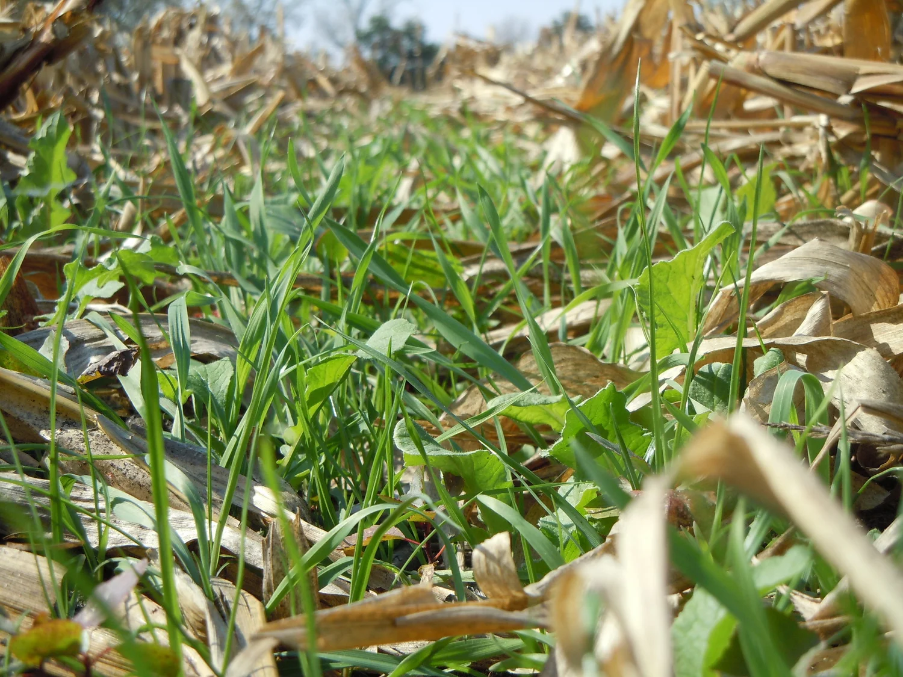

01
Agriculture Wet Application
Fungicides, insecticides, and other liquid products applied with precision timing and coverage to protect crop health and yield potential.
Services
From crop acres to community mosquito programs, our crews deliver organized, safety-first, high-performance aerial operations.
Fungicides, insecticides, and other liquid products applied with precision timing and coverage to protect crop health and yield potential.

Dry material aerial application with disciplined loading, dispatch, and field execution for consistent placement and turnaround.
Dependable public health support using structured flight operations and experienced pilots to help manage mosquito pressure.
Our Fleet
Our aircraft are purpose-built for agricultural application, equipped with guidance systems, and maintained to FAA standards for safe, high-volume seasonal operations.

How We Work
Every job follows strict safety procedures and operational controls to protect people, crops, and property.
We use proven systems and guidance tools to keep applications accurate, repeatable, and transparent.
We coordinate closely with growers, land managers, and partners to keep timing and priorities aligned.